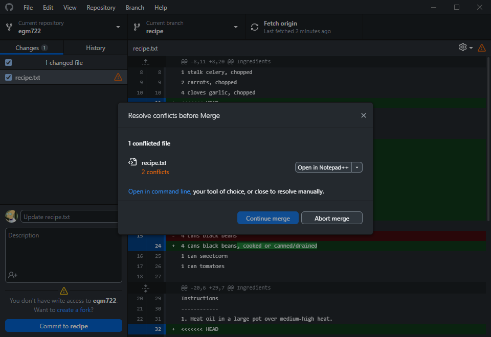
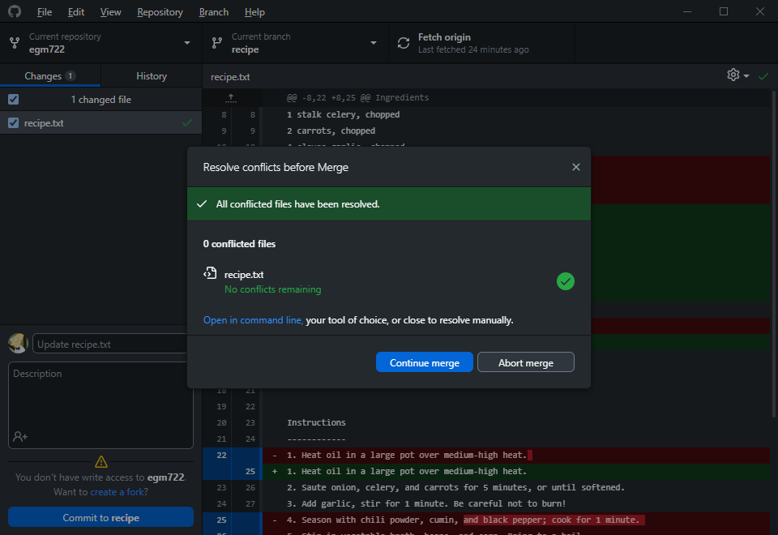

conflict resolution (using git)#
Sometimes, despite our best efforts, we run into conflicts in life.
The same is true for programming - when working with other people (or even ourselves, sometimes), we may wind up with different versions of a file (or files) that have conflicting changes - that is, a file (or files) has been edited on multiple branches of a project, and git isn’t able to determine which of these is the “correct” one.
When this happens, you will need to tell git what version of the file you want to keep by resolving the merge
conflict.
getting started#
To get started, open up GitHub Desktop to your EGM722 repository. When you click on the Current branch button,
you should see that in addition to the week* branches (week2, week3, week4, week5), there are two
additional branches: recipe and conflict-recipe.
The recipe branch is a feature branch that we are using to develop a recipe for spicy black bean soup,
contained in recipe.txt (change history):
{kind=link}
And on the second branch, conflict-recipe, we have the same file
(change history), but with some changes
that have been added by one of our collaborators, Bob1:
{kind=link}
When we go to merge conflict-recipe into recipe, we won’t be able to do so automatically - the two files
have different changes to the same lines, which means that the two branches have a conflict that we will need to try
to resolve.
creating the conflict#
Right now, we only have the “recipe” for a conflict2 - in order to actually create the conflict, we have to merge the conflicting branches.
You can do this in the exact same way that you merged the week2 branch into main using GitHub Desktop.
First, make sure that you are currently on the recipe branch:
{kind=link}
Next, click on the Branch menu, then select Merge into current branch….
In the menu that opens, select the origin/conflict-recipe branch:
{kind=link}
This time, instead of a green checkmark indicating that there aren’t any conflicts, you should see a warning icon,
with the message “There will be 1 conflicted file when merging origin/conflict-recipe onto recipe”:
{kind=link}
Click on Create a merge commit to generate the conflict that we will resolve.
resolving the conflict#
Once you have started the merge conflict, GitHub Desktop will warn you that you need to resolve the conflicts before you can finish the merge:
{kind=link}
It will give you the opportunity to open the file in your default text editor - for me, this is Notepad++,
but you might have something else installed - you can even use PyCharm or VS Code for this next step.
Note
As long as you are using a text editor (NOT MICROSOFT WORD), you should be able to resolve the conflict and finish merging the changes.
If you click the arrow next to Open in Notepad++, you should also see the following menu options:
Open with default program (usually Notepad on Windows computers)
Show in explorer
Use the modified file from
recipeUse the modified file from
conflict-recipe
Here, because there are changes that we want to keep in both versions, click on Open in Notepad++ (or Notepad) to view the conflicted file.
We’re looking for blocks of text like the following - this is how git indicates that there is a conflict between
two versions of a file:
<<<<<<< HEAD
<some stuff>
=======
<some other stuff>
>>>>>>> (other commit or branch name)
In order to resolve the conflict, we have to decide whether we want to:
keep only
<some stuff>(the version on our currently active branch,recipe);keep only
<some other stuff>(the version on the branch we’re merging,conflict-recipe);keep some combination of
<some stuff>and<some other stuff>.
Most of the time, you will end up deciding to use a combination of <some stuff> and <some other stuff> - in this
case, because the two versions of the file both contain changes that we’re interested in keeping.
The first conflict block in the file looks like this (on lines 11–22):
<<<<<<< HEAD
2 T chili powder
1 T ground cumin
1 T black pepper
=======
2 tablespoons chili powder
1 tablespoon ground cumin
2 teaspoons ground coriander
2 teaspoons smoked paprika
1 pinch black pepper
1 teaspoon oregano
>>>>>>> origin/conflict-recipe
Here, the change to abbreviate “tablespoons” as “T” has caused a conflict with the addition of “2 teaspoons ground coriander” and “2 teaspoons smoked paprika” - additionally, we have somehow added a whole tablespoon (T) of black pepper instead of just a pinch.
So, here is where you need to decide what ingredients list to keep for your updated recipe. If you are happy with writing out “tablespoons” instead of “T”, you can remove the first few lines:
<<<<<<< HEAD
2 T chili powder
1 T ground cumin
1 T black pepper
=======
along with the end of the first conflict block:
>>>>>>> origin/conflict-recipe
Alternatively, you could decide to keep the abbreviated forms (“T” for tablespoon, “t” for teaspoon), but perhaps you’d rather only use a pinch of black pepper, rather than an entire tablespoon.
Or, you might decide that you don’t like smoked paprika, or you dislike the taste of ground coriander, or…
Note
I can’t make these choices for you - you will need to decide for yourself how you like your recipes to be written, and what ingredients to keep.
Once you have finished editing the ingredients to your taste/preferences, let’s move on to the Instructions, where we can see another conflict (on lines 32–47):
<<<<<<< HEAD
2. Saute onion, celery, and carrots for 5 minutes, or until softened.
3. Add garlic, stir for 1 minute. Be careful not to burn!
4. Season with chili powder, cumin, and black pepper; cook for 1 minute.
5. Stir in vegetable broth, beans, and corn. Bring to a boil.
6. Meanwhile, in a food processor or blender, process remaining 2 cans beans and tomatoes until smooth.
7. Stir into boiling soup mixture, reduce heat to medium, and simmer for 15 minutes.
8. Season to taste. Enjoy!
=======
2. Saute onion, celery, carrots and garlic for 5 minutes.
3. Season with chili powder, cumin, coriander, smoked paprika, and black pepper; cook for 1 minute.
4. Stir in vegetable broth, beans, and corn. Bring to a boil.
5. Meanwhile, in a food processor or blender, process remaining 2 cans beans and tomatoes until smooth.
6. Stir into boiling soup mixture, add oregano, reduce heat to medium, and simmer for 15 minutes.
7. Season to taste. Enjoy!
>>>>>>> origin/conflict-recipe
Here, the addition of a separate instruction to add the garlic (in the HEAD version on recipe), along with the
addition of instructions for adding the new ingredients (on the conflict-recipe branch) has caused a conflict.
Once again, you will need to decide which set of instructions (or modified set of instructions) you wish to keep. I
think it makes sense to keep the garlic separate, so that it doesn’t burn - in this case, I would keep the 8
instructions from the recipe branch.
But, I want to remember where to add the different spices - this means I want to update the instructions with some of
the changes on the conflict-recipe branch.
In the end, this is the version of the instructions that I have chosen - your decision may be different:
1. Heat oil in a large pot over medium-high heat.
2. Saute onion, celery, and carrots for 5 minutes, or until softened.
3. Add garlic, stir for 1 minute. Be careful not to burn!
4. Season with chili powder, cumin, coriander, smoked paprika, and black pepper; cook for 1 minute.
5. Stir in vegetable broth, half of beans, and corn. Bring to a boil.
6. Meanwhile, in a food processor or blender, process remaining half of beans until smooth.
7. Stir into boiling soup mixture, add oregano, reduce heat to medium, and simmer for 15 minutes.
8. Season to taste. Enjoy!
Once you have finished editing the file and there are no remaining conflict blocks, you will be able to continue with the merge commit.
merging the resolution#
Now that we have edited the file so that the current version reflects how we want it to be, we’re not quite done, because need to finish the merge:
{kind=link}
Click Continue merge to finish the commit.
You should now see the message that you have successfully merged origin/conflict-recipe (or conflict-recipe)
into recipe:
{kind=link}
And that’s it - we have now successfully resolved the conflict between recipe and conflict-recipe, and
finished developing a recipe for spicy black bean soup in the process.
The final step is to click Push origin to push your local changes to your GitHub repository (the remote).
other tools#
In addition to using text editors such as Notepad++ or Notepad, there are a number of available tools that are built to handle conflicts, including IDEs such as PyCharm and VSCode:
PyCharm - see this page for an example of how to use PyCharm’s built-in functionality to resolve conflicts between branches.
VSCode - see this page for an example of how to use VSCode’s built-in functionality to resolve conflicts between branches.
Meld, an open source graphical interface for comparing different files. Works on Linux, Windows, and MacOS.
next steps#
Now that you have fully resolved the conflict by finishing the merge commit, you can go one further by merging
recipe into main.
Hopefully, there won’t be any changes on recipe that conflict with main - this should be completely
straightforward, because the only file that has been changed is recipe.txt, which doesn’t yet exist on main.
To do this, you can merge recipe into main following the same procedure that you did at the beginning of the
cartopy exercise (remembering to use recipe instead of week2).